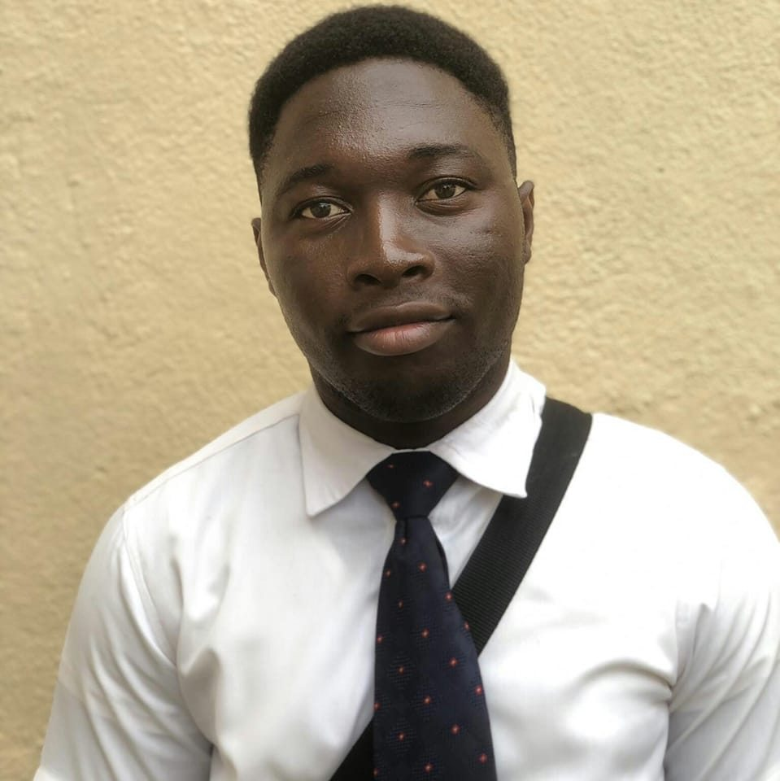

Prince N'guessan | WDD 130
Hello! My name is Prince N'guessan and I am from Abidjan, Ivory Coast. I love web development, outdoor adventures, and learning new technologies. As a guy passionated with video games, i decided to take this journey to be a software developer to bring innovation in the society in creation of websites and app, and video games too. I got 4 siblings and I'm the third child. In my free time, I like to play basketball, play video games, watch movies, anime and animations. Like I said before I'm originally from Ivory Coast and I recently moved in Utah a year ago to fulfill my dream. For me it looks like a great adventure that I'm about to live and feel. I know that the path is going to be long but sure as long as I stay focus on the Lord and I try to do my best to obey his commandments, I will receive the blessings. Every day is a blessing for me and an opportunity to be better.